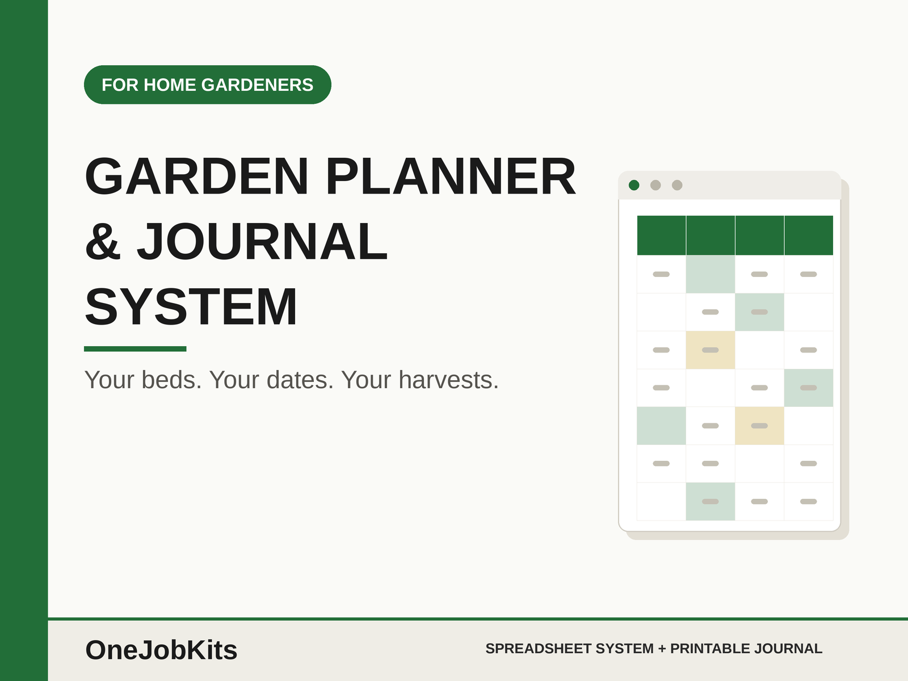

OneJobKits · Kit #23
Garden Planner & Journal — garden planner printable

If you searched for a garden planner printable, your season probably runs the way most seasons run: a seed order in an email, sowing dates on the back of a packet, the bed plan in a notebook from two years ago, and the harvest weighed — sometimes — on the kitchen scale and written down nowhere. Next spring, the same questions start from zero.
Start here, free: the planting record starter below is a real piece of the system — download it, print it, and record this week's planting tonight. The full kit under it gives the whole season one home: a spreadsheet planner for the screen and a fillable paper journal for the potting bench, both built to record your garden — your beds, your dates, your varieties, your harvests. It plans and records; it does not advise. Every date in it is a date you choose.
Free download — start with the FREE Planting Record Starter
The FREE Planting Record Starter is a 3-page fillable PDF (436 fields): planting record tables with 72 rows, a "my beds this season" block, and a pointer page to the full system. Type into it or print and write by hand. Recording only — no advice and no recommended dates.
Download the free planting record starter (PDF)Get it on Gumroad instead
What the starter does not do: it records planting, in one place, for the beds you give it. The full system below adds the season around it — the calendar that holds all 60 crops, the seed inventory that stops the duplicate orders, the harvest journal that answers next spring's questions, and a worked example season you can copy the shape of.
What's inside the full kit
- Garden planner workbook (Excel + Google Sheets) — 7 tabs, no macros; one linked system for the whole season
- Season Dashboard — your garden's name, location, zone note and year, plus six automatic totals read from the other tabs (crops planned, inventory items, beds planned, tasks logged, harvest entries, total harvest quantity)
- Planting Calendar — room for 60 crops: variety, sow indoors, transplant out, direct sow, your days-to-harvest note, expected harvest window and notes — every date is your own entry
- Seed & Plant Inventory — room for 60 items: type, variety, source, quantity, dates and storage, so you stop buying seed you already own
- Bed-Rows Layout Planner — a 20-bed planning table plus three sketch-grid blocks to draw your layout
- Task & Watering Log — room for 200 dated entries: what was done, where, and what is next
- Harvest Journal — room for 200 entries with quantity in your own unit (lb, kg, count, bunches — yours to choose)
- Worked example file — the whole workbook filled in with a fictional gardener's full season (Rosa Alvarez, Zone 6b — marked as an example only)
- Printable Garden Journal (PDF, fillable) — 12 pages and 1,334 fields: a season snapshot page, bed sketch grids, planting record pages, season journal pages and harvest log pages, for the notes that happen outside
- Setup guide (PDF) — 6 pages: the honest part, what's inside, Excel + Sheets setup, a tab-by-tab walkthrough, the example tour, the season rhythm and an end-of-season review
- Bundle ($39) adds: the Preserving & Pantry workbook pair (Excel + Google Sheets) — a Harvest → Preserving Log (room for 100 batches, recording your own batches and pointing you to tested, published guidance for method), a Pantry Inventory (100 items) and Seed Saving Records (60 entries)
A filled example — so you can see the finished thing
The workbook ships filled in with one fictional gardener's complete season — Rosa Alvarez, Zone 6b — marked as an example only, so you can see the finished shape before your first real entry:
| Tab | Rosa's example season |
|---|---|
| Planting Calendar | 12 crops, each with its own sow / transplant / harvest-window entries |
| Seed & Plant Inventory | 13 items with source, quantity and storage noted |
| Bed-Rows Layout | 4 beds planned and sketched on the grids |
| Task & Watering Log | 16 dated entries — what was done, where, what is next |
| Harvest Journal | 19 harvest entries, 86.5 total quantity across mixed units |
Run your season the same way and the end-of-season review writes itself: what went in, where it went, and what actually came out of each bed — the three answers every gardener wishes last year's notebook had kept.
Who it is for
Home gardeners — vegetable growers, raised-bed gardeners, allotment and homestead gardeners — who want one season, and then every season, recorded in one place instead of scattered across packets, notebooks and memory.
Who it is not for
Anyone looking for growing advice, recommended planting dates for their area, or a promise that anything will grow. There is none in here — on purpose. This kit organises your own garden records; your seed packets and your local extension service are the place for guidance.
Questions buyers ask
- How do you keep track of what you planted where?
- One bed table plus sketch grids, one calendar, one harvest log. In the full kit, the Bed-Rows planner holds up to 20 beds with three drawing grids, the Planting Calendar holds 60 crops with your own dates, and every harvest lands in the same workbook — so 'what is in bed 3, and what did it give us?' is a lookup, not an excavation.
- Does it tell me when to plant for my zone?
- No — deliberately. Every date in the system is your own entry, taken from your packets and your local knowledge. The kit records and organises; your seed packets and your local extension service are the place for planting guidance.
- Can it stop me buying seed I already own?
- That is exactly what the Seed & Plant Inventory tab is for: up to 60 items with variety, source, quantity, dates and where the seed is stored. Check the tab before the catalogue order, not after the parcel arrives.
- What did that bed actually produce last year?
- The Harvest Journal answers it: 200 entries with quantities in your own unit — lb, kg, count, bunches. The example season in the kit totals 86.5 across mixed units from 19 entries, so you can see how the season-end picture builds up entry by entry.
- What does the free starter cover, and what does the full kit add?
- The starter records planting: 72 record rows and a beds-this-season block, as a printable fillable PDF. The full kit is the season-long system — calendar, inventory, bed layouts, task and watering log, harvest journal, the 12-page printable journal, and a full worked example season.
- Does the Bundle teach preserving or canning?
- No. The Bundle's Preserving Log records your own batches — what, when, how much — and points you to tested, published guidance for method. It contains no recipes, temperatures, times or processing instructions, by design.
- Excel or Google Sheets?
- Both formats are included for every workbook, with no macros. The journal and the free starter are fillable PDFs that also print cleanly for the potting bench.
Prices
Standard: $29 · Bundle: $39 — one-time payment, digital download. No subscription; the files are yours.
Can't find the kit you need?
We build it. Ask us — first asker gets it at half the shelf price. Tell us the job at onejobkits.com and we will build the kit for it.
Related kits
Please know: this is a planning and recording tool only — not growing advice, and no germination, yield or harvest guarantee of any kind. Planting dates in the system are always your own entries; the example's dates belong to the fictional example and are not a recommendation for your garden. The Preserving Log records your own batches and includes no recipes, temperatures, times or processing instructions. All example data is fictional.